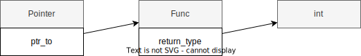

KDOC 46: Goの宣言構文がCと異なる理由を見る
Goの宣言構文は、C言語と異なっている。Goの設計者は、C言語でのわかりにくさを改善するためにGoでの宣言構文を採用したという。C言語のネストした型宣言は順番通りに読めずわかりにくい。
表現しようとしている型の図。

int (*x) () // => * func() int
Goはそのまま左から右に読める。
*func() int
関連。
- KDOC 47: 『低レイヤを知りたい人のためのCコンパイラ作成入門』。Cからの改良点としてGoの型記法が挙げられていた
- [翻訳]Go言語の構文がC言語から大胆に変わった理由 - Qiita。ロブ・パイクの解説